点击上方蓝字，与您分享双胞胎育儿经！
文|圆圈妈，一个文思如尿崩的双胎妈妈
01
双十一购物节狂欢后的第二天，想聊一个比较沉重的话题，跟双胞胎早产儿宝宝有关。
这也是在圆圈兄弟出生头一年被我经常碎碎念的问题：“我的早产儿宝宝是脑瘫儿吗？”
前段时间，孖仔帮喂养群有一宝妈说她的宝宝大拇指内扣，她很焦虑。
这让我瞬间感同身受，这不就是3年前那个神经兮兮的我吗？
经常拿着圆圈的各种奇怪症状在各大育儿论坛寻医问药，每次去儿保科就逮住医生赤裸裸地问：“我儿子会不会是脑瘫？”
按实际预产期计算，圆圈属于早产1个月，按照双胎37周足月论，他们也顶多是早产了9天而已。
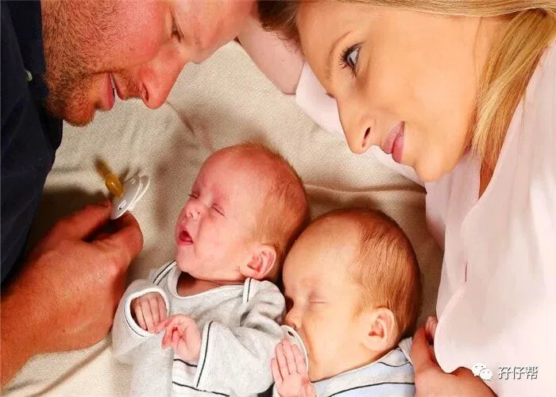
可是我对“圆圈是早产儿”这个标签一直耿耿于怀，仿佛所有早产儿都注定发育迟缓，智力低下…好像他们就是儿保医生眼中的脑瘫高危儿…
从刚开始喂奶、练习抬头，学翻身,长牙、说话、学走······稍微发现点异常，我就魔怔似的疑神疑鬼。
总是担心他们啥时候会抬头，何时会翻身，为什么还不会坐起…看到同龄的宝宝已经会爬了，我家两只还在翻身路上。
每当这个时候，我的脑海里就冒出一个问题，坏了，该不会是脑瘫吧？
我很确定我是亲妈，只是因为太在乎了，以至于神神叨叨的。
02
来看看圆圈出生头一年，我是如何被圆圈的成长发育折磨得神经质和正常人之间秒切换，以至于“产后忧郁症”都嫌我中毒太深，不好惹，纷纷离我而去…
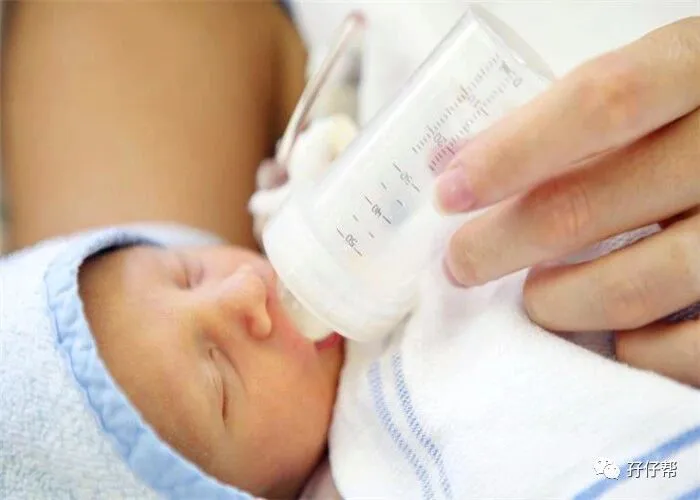
圆圈1个月，严重喂养困难，吃奶很费力，总是很用力吸，每次喝奶都是一身汗，眼睛经常向上翻，头总是往一侧倒，他们的哭声很小，像小猫小狗的呜咽声。
有时候会一直哭，很难安抚。哭的时候，整个后背弓起往后倒，全身僵直，非常难搞。
满月体检，身高体重都有增长，但还是发育欠佳，我跟医生反馈了圆圈在月子期间的奇怪情况，医生了解到圆圈是早产儿，建议我们带孩子去做康复治疗。
那是我第一次接触“康复治疗”这个词语。
圆圈1个月8天，我还在犹豫要不要带去做康复治疗，圆圈哥俩肺炎，双双住院。圆圆还有合并脑炎第二次进了NICU。
出院后，圆圆的体重跟刚出生那会没啥区别，眼神呆呆的，不会笑…
看着住院清单那些昂贵的进口药名称，我大概知道他在NICU 经历了什么，我的儿子才38天就被这些高级药物浸泡过，想想就心绞痛…
所幸我没有陪护在旁，没有目睹他被抢救的那一幕幕，不然...终生都有阴影。
圆圈2个月，喂养困难持续进行中，轻者嘴角溢奶，吃着吐奶，严重时喷射状吐奶，有时奶水从嘴巴和鼻子一起喷出来，吐完之后，就是一阵猛咳，接着大哭，哭到背过气，半天没反应…
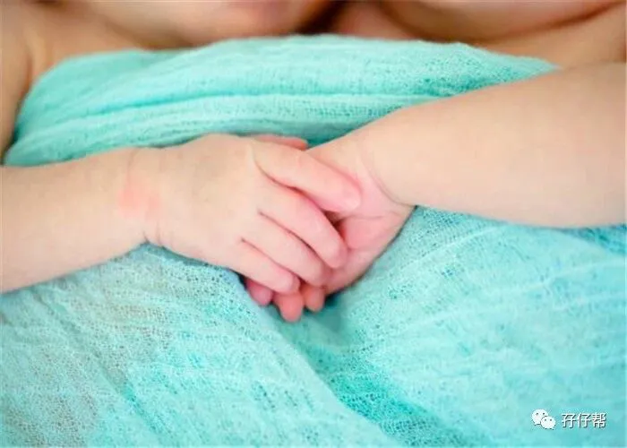
圆圈还不到3个月，他们又双双肺炎住进了深圳市儿童医院。
我们又把圆圈的发育情况跟医生反馈，医生仔细做了检查，发现他们身体四肢很僵硬，抬头很奇怪，建议我们出院后找专业儿保医生做康复训练。
这是我第二次听到医生要求做康复训练。
圆圈满3个月，一个很普通的下午，我正在整理他们的衣服，看到他们手脚不停地舞动，嘴里哼哼唧唧，然后就咧开嘴笑了…
这是我第一次看到他们笑。3个月了！第一次看到他们笑！
我激动到一边笑一边哭….
嗯，还好！还会笑！说明还是正常的！虽然迟了点！
隔天带圆圈去社康体检，医生简单做了检查，说发育欠佳，让去妇幼保健院给儿保医生做专业评估。
圆圈5个月27天，福田区妇幼保健院，挂儿保专家号体检。
经过医生评估，圆圈纠正月龄后，身高体重发育勉强合格 ，但是智力发育只有3个月的水平。
医生看到圆圈出生时的出院小结，怀疑有脑损伤，建议复查核磁共振。
而圆圈的大动作也不是很理想。4个月翻身不是很顺利，只能侧卧翻到一半，另一半就翻不动了。
圆圈9个月7天，例行体检，身高体重追上来了，但是智力评估只有8个月的水平。
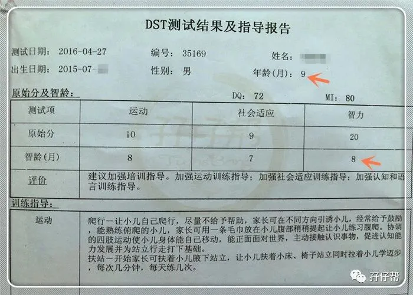
医生还发现圆圆足背屈角75°，双下肢肌张力高，让尽快复查核磁共振，不能再拖。
是的，圆圈兄弟9个月了居然还不能正常抓握，做智力测评的时候，让他们用手指和大拇指抓住小球，他们都做不到。
圆圈1岁1个月，身高体重赶超同龄宝宝，属于中上水平，智力测试依然落后，但差距越来越小了。
走路有点足尖着地，但能颤巍巍地走两三步…
这一次体检，医生终于没有催我们带圆圈复查核磁共振了，还告诉我们这样的双胞胎早产儿算发育得很好了。
大运动发育：二(月龄)抬、四翻、六坐、八爬、十站、周岁走...
圆圈都能完成，虽然总是慢人半拍，但总体是正常的！
圆圈1岁多，学会走路后，我终于从魔怔中解脱出来，历经12个月，终于把自己救赎了。
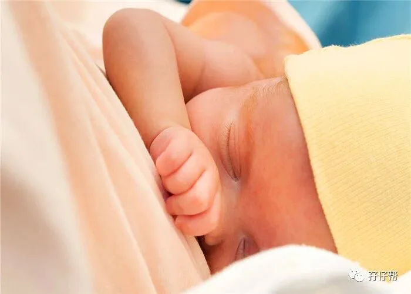
为了写这个文章，我翻出他们这3年来的体检记录，一边看一边哭。
原来，我是这么熬过来的！
天啦，养对双胞胎，我感觉我活了不止30年。
03
只要贴上早产儿的标签，好像就要跟发育迟缓脱不了干系，好像他们就要落后同龄宝宝一大截，
相信不少家有早产儿的家长也如我这般焦虑不安？有时候还病急乱投医，乃至上当受骗。
所幸，我并没有带着圆圈兄弟过度治疗， 即便我已经被不少专家医生千叮万嘱过多次让去做康复治疗。
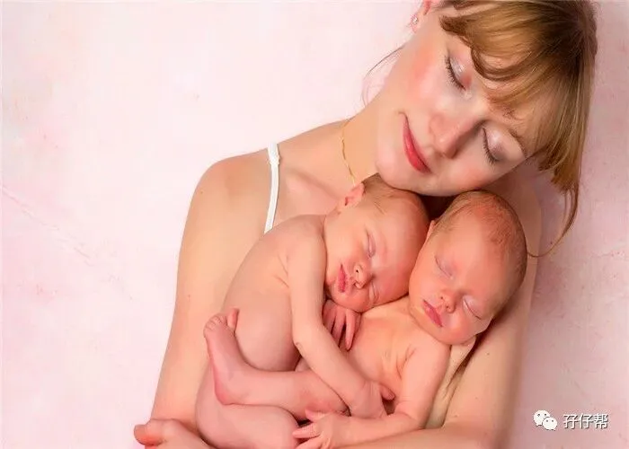
我曾经犹豫，纠结，也害怕因为我一时的疏忽而延误了他们的治疗时机而抱憾终生。
养一对双胞胎，特别是早产儿，真的是心力交瘁了。除了解决两宝宝的温饱问题，还要兼顾他们的身体发育状况以及各种琐碎之事，片刻不敢松懈。
过来人的经验给到家有双胞胎早产儿的家庭以下3个建议。
Tips
多观察，多比较其他同龄宝宝
平时多观察两宝宝，从大动作发育，精细运动发育和社会认知能力，三个大方向去综合评估。
如果发现两宝宝有发育迟缓的迹象，纠正月龄后，依然低于同龄宝宝，那应该引起重视，尽快去医院检查下比较稳妥。
倘若发现有问题，还能做到早发现，早干预，早治疗。毕竟，有太多有明显发育迟缓的宝宝，被检查出是患有脑瘫或其他遗传疾病。
莫让一时的粗心大意而耽误了本可以康复治疗好的两宝宝遗憾一生，空悲切！
圆圈出生的头一年，我干过最龌龊的事情就是经常偷偷瞄别人家的孩子，暗中比较，心里嘀咕，把自己整得活脱脱人贩子一个！
稍微发现有不一样，就很慌乱，催着圆圈爸赶紧给圆圈挂专家号去复查核磁共振。
可是圆圈爷爷奶奶不让，坚信自己的两宝贝孙子没问题。
我知道，在这方面最有话语权的就是圆圈爷爷奶奶，他们照顾着圆圈的吃喝拉撒睡，最了解圆圈的生长发育了，仅仅凭我看到的表面现象就怀疑圆圈发育迟缓，非常不理智。
圆圈爸也不站在我这边，觉得我这是魔怔，无药可救那种。
正如没有两个相同的大脑，也就没有两个一模一样的孩子，每一个孩子都是独一无二的，生长发育也会有所差异。
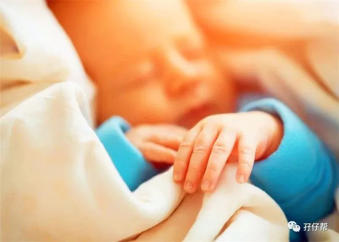
多观察多比较，并不是以别人家的孩子为标准，而是仅供参考而已。
拿足月儿的标准去衡量早产儿，确实有违公平，而且并不是说宝宝的发育状况达不到标准就说明有问题。
只是早产儿宝宝因先天不足，更应倍加小心，多加注意，争取在后天环境下追赶式生长。
带上早产儿宝宝定期体检
如果自己实在评估不了，不好判断，那可以找专业儿保科医生去评估。
在孩子出生头一年，一定要带两宝宝勤做体检，一般是满月体检，3个月，6个月，9个月，1岁。
每个成长阶段都是一个里程碑，都有科学的参考标准。
有些心大的父母，觉得宝宝吃喝拉撒睡正常，看起来并没有异常，总是怀着侥幸心理，觉得应该没有什么问题，往往就忽略了定期体检。
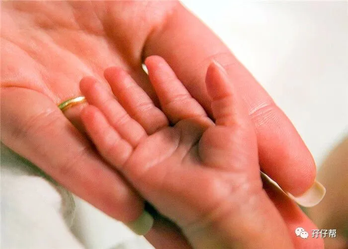
定期体检可以让父母更科学地掌握孩子的生长发育情况，从而针对性地做出饮食喂养方面的调整和纠正。
尤其是早产儿，更加应该定期体检，没问题就最好，若有问题一旦延误错过了最佳治疗时机，那真的很可惜。
但并不是说医生说有问题，孩子就必定有问题。我相信科学，相信医学技术，但我更相信自己的孩子。
我与他们朝夕相处，对他们清楚得很，究竟是不是傻子，凭母亲的直觉也能猜出几分。
不能仅仅凭几个测试仪和医生三五分钟的看诊就断定孩子不正常，更多是要通过自己反馈的问题，结合医生的评估，得出结论。
若发现早产儿有智力发育，请尽早就医
如果很不幸发现孩子有智力发育的问题，并得到确诊，请尽快找相关医生咨询治疗方案。
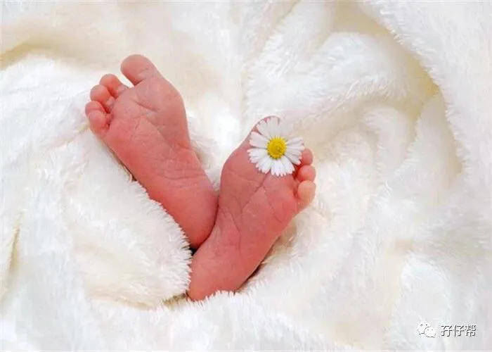
不管医生怎么宣判你的孩子将来如何，请不要相信末日来临了，相反，我们更加要坚强起来与残酷现实作斗争，主动迎战总比缴械投降好。
而且，各种实践证明，人的大脑是非常神奇的器官，尤其是宝宝的大脑，在出生后的第一年是个高速发展的时候，如果给予正确的刺激引导，大脑是有修复代偿功能的。
医生都会跟你说最坏的情况，实际的情况可能不会那么糟糕，但是你得做好心理准备，一旦最坏的情况发生，你和你的家人可以接受并坚强面对。
小孩的生命力顽强到超乎想象，新生儿大脑有代偿能力，特别是0到1岁之间，早期干预做康复治疗的话，真的会发生奇迹。
我也是一路被医生吓过来的，虽然没有带他们去专业机构做康复治疗，我们在家都有给圆圈做抚触和婴儿被动操等。
圆圈9个月的时候还被医生宣判发育迟缓，1岁后就说各项均达标了。
也许我做不做，圆圈都会顺利成长，但与其去博一个可能性，倒不如竭尽全力去做，不让自己留有遗憾。
记得圆圆第二次进NICU的时候，医生说他病得很重，需要过很多关才能安全出院，作为早产儿父母的我们，又何尝不是在过六关斩五将呢？
同时照顾两个双胞胎早产儿，无异于行走在刀刃上，每一步都走得小心翼翼，胆战心惊。
好在大多数的早产儿宝宝在爸爸妈妈的关爱下，都能顺利健康成长。
04
番外篇
孖仔帮喂养群有宝妈提到宝宝的核磁共振结果提示异常信息。
圆圈出生50天内做过两次核磁共振。均显示有异常。如图所示：
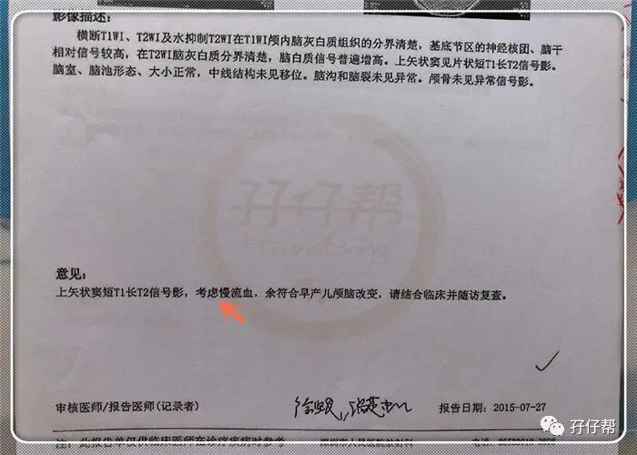
1岁5个月，圆圆幼儿急疹高烧惊厥入院复查后，那些造影都消失了，核磁共振结果无异常。
因此，请在喂养两宝宝期间多注意观察，等孩子稍大一点，觉得不放心就复查下。
其实幼儿急疹抽搐后做核磁共振有点过了，但被他当时惊厥时恐怖的样子吓到了。
真的是终身难忘，好似他抽过去之后就再也醒不来了…想想就心漏掉半拍。
因此，当医生提出复查核磁共振，排除脑部问题的建议，我毫不犹豫地答应了！
Tips
家有早产儿的家庭，可以关注儿科医生鲍秀兰。她在早产儿的喂养护理等方面有较深的研究。
早产儿普遍现象如拇指内扣，肌张力过高，过低，她有专门出书提到这些常见问题和治疗方案。
非常值得参考借鉴。
非常荣幸能看到鲍奶奶的关于早产儿方面的科普文章，让我在面对圆圈被疑似脑瘫高危儿的时候不至于如临大敌，方寸大乱。
婴儿操也是鲍奶奶教的，可缓解肌张力过高，相当于在家给早产儿宝宝做康复治疗。
婴儿操，我这有教程，有需要的宝妈可以私聊我发给你们哈。
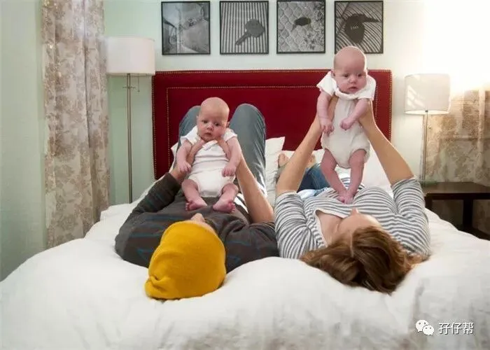
最后，祝愿全天下的早产儿宝宝健康快乐地成长，全天下的早产儿父母们早日脱离魔怔，重焕新生！
孖仔帮有双胞胎爸爸专属群啦！
在此你们可以互相交流下初为人父的喜悦和已为人父的辛酸，还有你们男人间的家长里短…尽情唠嗑吧！
入群方式：＋圆圈妈的微信(sgguy-com)，我会发群聊邀请给你们。欢迎准爸爸的加入双胞胎育儿大家庭，一起分享双胞胎育儿经。
#重磅互动#
评论区聊一聊
你希望圆圈妈写什么干货？
随便提，万一下篇就写了呢？
END
本文系圆圈妈sgguy-com原创，来源于孖仔帮，专注双胞胎孕期育儿经验分享，著作权归孖仔帮所有。
212:原来双胎妈妈可以这样数胎动，好简单啊
215:双胎子宫日记系列|（下）你看不看？双胞胎妈妈直播剖腹产全过程
302:喂养干货||如何训练双胞胎宝宝睡整夜觉
306: 真人示范！双胞胎妈妈高难度喂母乳技巧
219双胞胎准爸爸的生存指南：不做猪一样的队友，活着出来喜当爹
220双胞胎准妈妈，其实你的产检方式一直搞错了…
222:看过这份最简单的双胞胎宝宝用品囤货清单，其他的都是将就
712：双十一囤货：我为什么不买并排式的双胞胎婴儿车，这篇文章有答案
304:家有双胞胎宝宝，这6个小贴士越早知道越好
305:双胞胎宝宝怎么睡？这样做既省钱又安全
303:干货||配方奶喂养的双胞胎宝宝囤货用品清单
309: 如何顺利度过双胞胎宝宝的第一年
710:双胎妈妈囤货建议||这6个育儿神器，吃土也要买
我猜你肯定喜欢看上面的文章，对不对嘛？关注孖仔帮，回复文章前面的数字编号即可阅读。
长按识别二维码关注我们
关于这个号
谢谢关注！我是圆圈妈
85后，全职双胎妈妈
家有孖仔男宝两枚，圆圈&圈圈
双胞胎育儿公众号：孖仔帮
旨意分享双胞胎育儿经验帮助双胞胎家庭
有经验可循
有组织可靠
希望我的经验对您有所启发
期待与您一起共享双胞胎育儿经
孖仔帮目前有4个微信社群
孕期群，喂养群，闲置群，双胞胎爸爸专属群，
如需入交流群，请+圆圈妈的微信号sgguy-com,或扫描下方二维码

由圆圈妈邀请入群
更多孖仔帮双胞胎原创育儿文章请猛戳 "阅读原文" 或者直接上圆圈妈的个人博客。
博客链接：https://www.sgguy.com/twinsbang
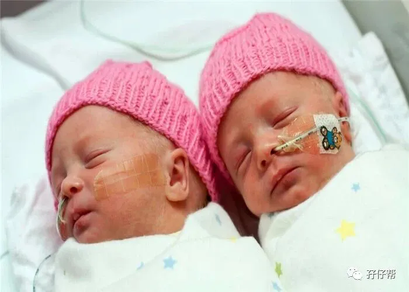